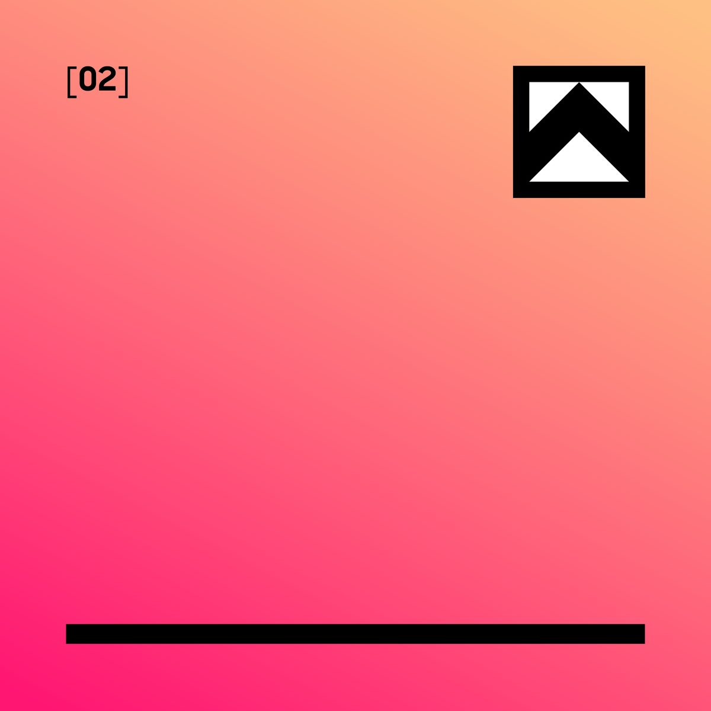
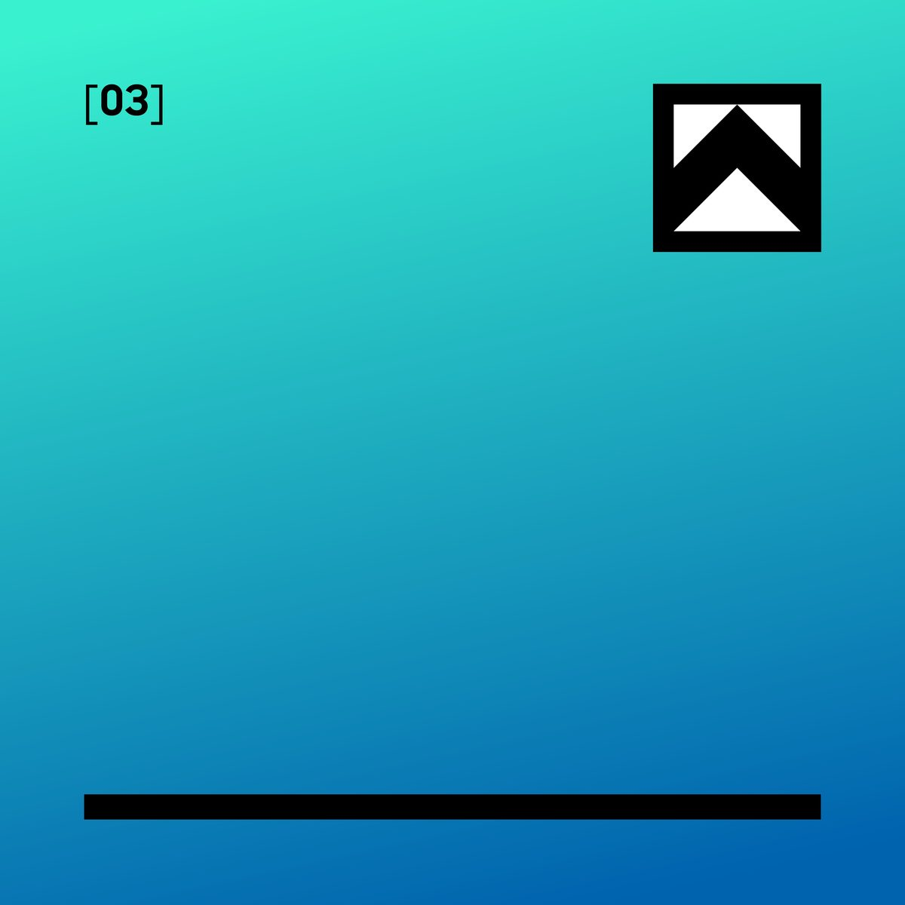

Redefining What's Possible.
I build interfaces from the future — Web sites, digital products, landing pages, graphic design and product experiences engineered with machine precision using cutting edge technology.
I build interfaces from the future — Web sites, digital products, landing pages, graphic design and product experiences engineered with machine precision using cutting edge technology.
High-performance interfaces built with the latest technology. I build on the architecture of sound UI fundamentals.

Brands that leave a mark. Logos, visuals, identity systems, & tone of voice built to feel sharp in the spotlight & solid long after the lights fade.

I create clean, simple, easy-to-navigate HTML planners that help you stay organised without the overwhelm.
I've spent over two decades in the design and creative industry — across agencies, in-house teams and my own studio — shaping brands and building the digital experiences people actually use.
What drives me is technology, and the constant search for better ways to make things. I'm endlessly curious about where design meets cutting-edge tech, and I lean on tools like AI to push what's possible — working faster, sharper and more precisely than ever before.
Above all, I love web design and building digital products: clean, considered tools that solve real problems and feel effortless to use.
That's what Northhaus is built on.